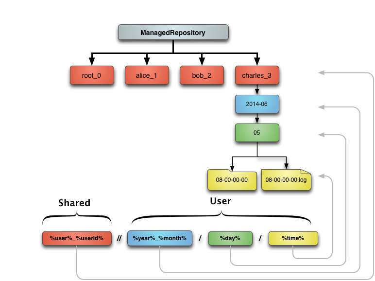

OMERO Import: FS
Paris 2014
Outline
- Introduction to FS
- Advanced import
- Advanced out
- Advanced admin
Introduction to FS
- Changes in OMERO5
- Upgrades
- Less data duplication
- Filesets
- ManagedRepository
- Synthetic data
Changes in OMERO5
OMERO 5 introduces improvements to image import that preserve your original data and reduce data duplication.
We begin by outlining the change that came with version 5.0.0: OMERO.fs.
Changes in OMERO5
OMERO 4 Import
- client sends image planes over the network
- stored as
Pixels
, an internal uncompressed format - additionally, original
archived
files can be stored - though not for HCS plates
- pyramids stored for all large images
Changes in OMERO5
OMERO 5 Import: FS
- client uploads only original data
- including HCS plates, everything is
archived
- server does not store Pixels files
- pyramids stored for few large images
- only those without subresolutions in file
Changes in OMERO5
OMERO 5 Import: FS

Changes in OMERO5
OMERO 5 Data out: FS

Upgrades
Migrating to FS
- new OMERO users should use OMERO 5
- upgrade scripts provided from OMERO 4
pre-FS
images still Pixels, not in Filesetsynthetic
images also not in Fileset- for instance: projections, kymographs
Less data duplication
Filesets
Introducing Filesets
- a set of related files
- Bio-Formats must read them together
- a set of images, arising from those files
- may be just one file and one image
- Project/Dataset, Screen/Plate hierarchy remains
Managed Repository
- server stores and reads original data
- OMERO acts as repository of original data
- without Pixels files, less data duplication
- original data visible in server filesystem
- each Fileset in its own subdirectory
Synthetic data
*** Not sure what this is and whether it should be later?
Advanced import
- In-place import
- Even less data duplication
- DropBox
- Polling
- Cron Job
In-place import

Even less data duplication
DropBox
Polling
Cron Job
Advanced out
- More on ManagedRepository
- Samba & ldap mapping
More on ManagedRepository
Samba & ldap mapping

Advanced admin
- Adding disks
- pre-FS -> FS migration
Adding disks

pre-FS -> FS migration
Discussion
- Questions?
- Other import scenarios
- Feedback
Other import scenarios
Other import scenarios
Unsmart import

Any Feedback?
- We welcome questions and comments on FS.
- What further work on FS would be most useful?
- Plenty more of this import workshop still to come.
- For more detail of FS see last year's workshop.